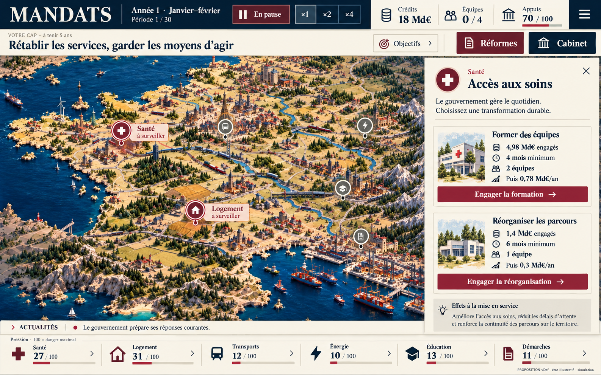
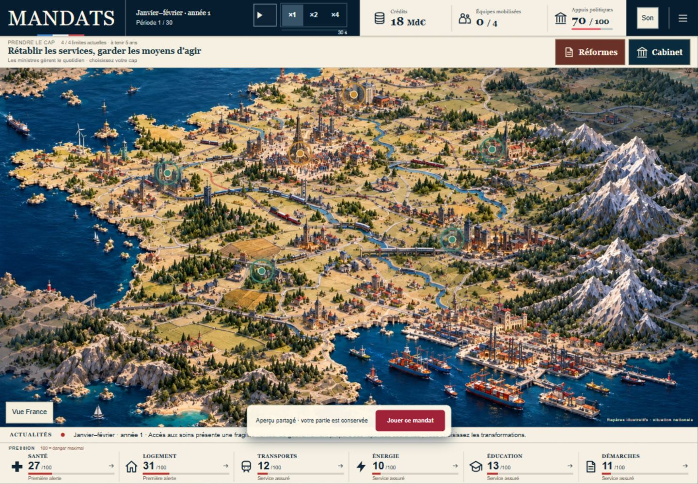
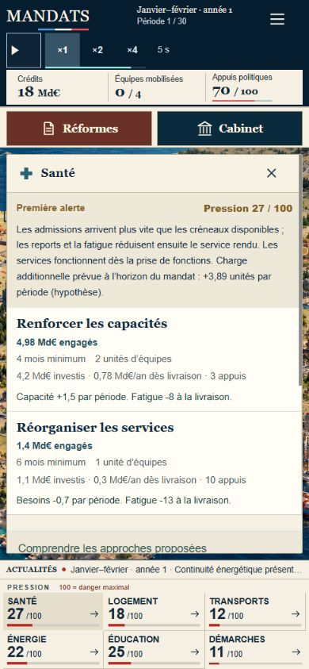
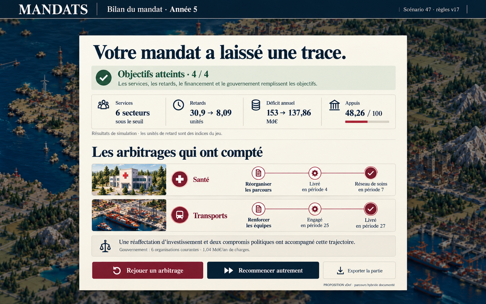

Une promesse exacte
L’accueil parle de 30 décisions ; la v17 compte 30 périodes et un nombre indépendant d’ordres. Présenter le gouvernement et le temps dès l’entrée.
La bonne base existe. La vDef doit rendre chaque arbitrage lisible, chaque livraison sensible et chaque bilan personnel.
Comprendre le pays → engager un compromis → suivre sa préparation → constater sa livraison → comprendre son héritage → rejouer.
Nous conservons la carte approuvée, le temps autonome, les six secteurs et le gouvernement. Les priorités portent sur la cohérence, les états du jeu, le rythme et la causalité du bilan.
Version vérifiée. Le bundle JavaScript servi en production est identique, octet pour octet, au build du commit audité 791a26a4. Les premières lectures de l’ancien local v8 ont été exclues. Voir les empreintes.
Lire l’audit complet et les critères vDef
Livrable de conception : aucune règle ou interface produit modifiée. Les images ci-dessous sont des propositions ImageGen, distinctes des captures du jeu réel.
L’accueil parle de 30 décisions ; la v17 compte 30 périodes et un nombre indépendant d’ordres. Présenter le gouvernement et le temps dès l’entrée.
Un chantier ne doit jamais masquer une crise. Gravité, tendance et avancement doivent pouvoir se lire simultanément.
Nommer ce qui change dans chaque service ; comparer engagement, charge annuelle, équipes, délai et sacrifice au même endroit.
Le parcours capacité documenté conserve onze périodes après sa dernière livraison : 5 min 30 à ×1. Valoriser le maintien et éprouver une projection contrôlée.
Montrer les étapes qui ont compté, les charges laissées et les compromis. Rejouer un arbitrage doit être une action explicite.
Focus contrasté, actualités complètes, petits écrans, sauvegardes, offline et essais externes. Des invariants valides ne prouvent pas le plaisir.
Carte dominante, secteur nommé, comparaison des transformations dans un panneau. Le cap, les ressources et les six secteurs restent accessibles.


Deux voies lisibles, avec leur coût et leur temporalité. Le texte concret remplace l’accumulation d’explications ; les détails restent accessibles.

Quatre objectifs réels, une comparaison avec l’héritage et deux trajectoires de décision. Les valeurs de cette proposition proviennent du parcours hybride documenté, graine 47.

Limite importante. Aucun essai de joueurs externes, aucune mesure de plaisir ou de rétention et aucune recette complète sur appareils physiques dans cet audit. Les maquettes nécessitent une vraie intégration et ses contrôles.